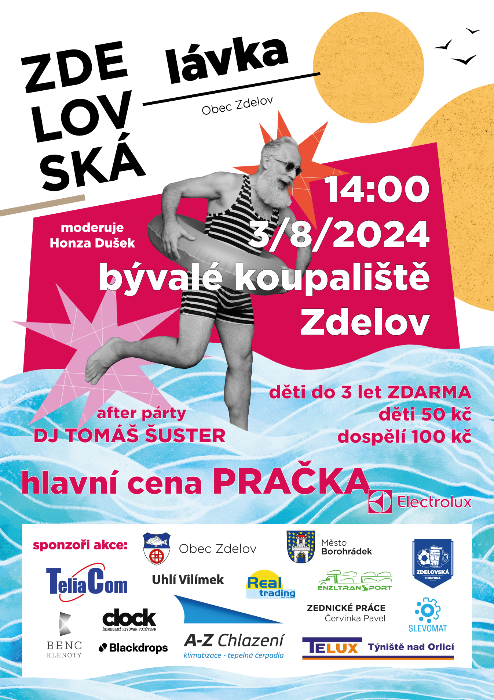

O Zdelovské lávce
Zdelovská lávka je každoroční soutěžní akce, která spojuje zábavu, sportovní výkony a přátelskou atmosféru. Soutěž je rozdělena do tří disciplín: běh po pevné lávce, běh s trakařem přes pevnou lávku, běh přes plovoucí lávku. Cílem soutěžících je zvládnout jednotlivé disciplíny v co nejkratším čase a bez pádu do vody. Každý pokus prověří rychlost, rovnováhu i obratnost, zatímco diváci se mohou těšit na napínavou a zábavnou podívanou.
Akce se koná každé léto v areálu bývalého koupaliště Zdelov a každoročně přiláká desítky účastníků i stovky diváků. Během dne probíhá bohatý doprovodný program, občerstvení a večerní zábava.
Jak akce vznikla
Zakladatelem Zdelovské lávky byl Miroslav Bozetický, který stál u zrodu této soutěže a výrazně se zasloužil o její podobu i rozvoj. Na organizaci akce se dnes podílejí místní obyvatelé a Zdelovští dobrovolní hasiči, díky nimž se tradice každoročně úspěšně udržuje.
Plakát akce 2024
